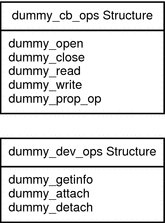

Overview of the Template Driver Example
This example guides you through the following steps:
Create a directory where you can develop your driver and open a new text file named dummy.c.
Write the entry points for loadable module configuration: _init(9E), _info(9E), and _fini(9E).
Write the entry points for autoconfiguration: attach(9E), detach(9E), getinfo(9E), and prop_op(9E).
Write the entry points for user context: open(9E), close(9E), read(9E), and write(9E).
Define the data structures: the character and block operations structure cb_ops(9S), the device operations structure dev_ops(9S), and the module linkage structures modldrv(9S) and modlinkage(9S).
Create the driver configuration file dummy.conf.
Build and install the driver.
Test the driver by loading the driver, reading from and writing to the device node, and unloading the driver.
The entry points that are to be created in this example are
shown in the following diagram.
Figure 2-1 Entry Points for the dummy Example
